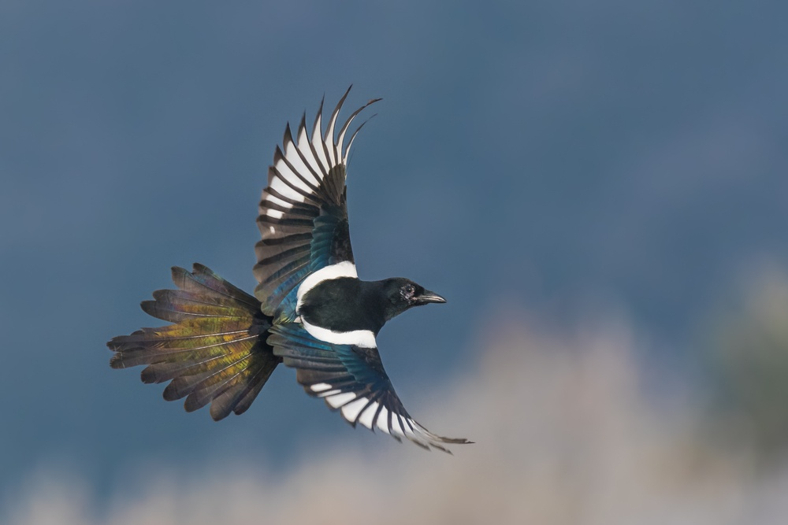

Am I Thinking About You? (.com)
updated every second
Yes
Here's a poem
Mixed-up Moon by Anthony Madrid
Mixed-up moon. Prop open the book.
Now and forever, you nip it in the bud.
I allow the heart does not make the blood,
Nor the human being the book.
Mixed-up moon. I don’t have to look.
Que no quiero ver that talked-up perfection.
It’s no use trying to rub out your reflection
From a piece of polished brass.
Mixed-up moon. I’ll take that as a yes.
I’ll take it outside, out of ’shot of the mourners.
I think you’ll agree it’s time we cut corners. We’ll cut
So many corners, the thing becomes a sphere.
Mixed-up moon. Insincere, insincere.
Thomas à Kempis and Francis Xavier.
The Better Book says that good behavior
Is the privilege, not the duty, of the good.
Mixed-up moon. Don’t misunderstood.
You close the circuit, find out what it’s worth.
Redwood roots running deep in the earth:
They only go down six feet.
Mixed-up moon. Pilgrimage sweet.
All with me’s meete that I fashion fit.
We wake and forget the dream we were having:
Same thing happens to childhood.
Mixed-up moon. Already reviled it.
Bird in the egg and a tale to embroider.
Any ten words in any order,
The result will be the same.
Mixed-up moon. Verstehn Sie ihn?
Ich—hüte mich, ihn zu verstehn.
About these kids making out on the train,
I say: Deja ir a mi pueblo.
Mixed-up moon. Count Dracula Twemlow.
Twelve disciples and a canine nuisance.
My rabbi says that whoever chooses
Belief is not a believer.
Mixed-up moon. Rock-’em Occam’s cleaver.
First publication in form of a fascicle.
Children! they don’t even know it’s possible:
Having friends you don’t like.
Mixed-up moon. Riker’s Island bike.
Raking the grass and raking the weed.
A plane’s shadow on building and street:
It doesn’t travel the speed of the plane.
Mixed-up moon. Semper the same.
Temperament, temperament, given to worry.
Their fault is they can’t even tell a story
Unless they understand it.
Mixed-up moon. Give Petunia a minute.
He’s gone over to Jesus, molted a feather.
Any ten shapes, taken together,
Are a jigsaw of the degenerate body.
Mixed-up moon. Gastrocnemius.
Hard for these geniuses, easy for children.
Most of what passes for bravery is only
Want of imagination.
Mixed-up moon. Insert pagination.
Bird in the egg, picking its fur.
You want to know what’s in it for her?
Your good looks and diction/syntax.
Mixed-up moon. Everybody wins.
¡Aléjate de mí, Satanás! unless
Any lit match will pass for a compass:
The flame points up, because hell is above us.
Mixed-up moon. Hell is above. 29 April 2014:
I have memorized the Hindu poem that says
This hunk of quartz must someday flex
Its back and run up a tree.
Here's a picture
This is a Eurasian Magpie, native to the Netherlands.
